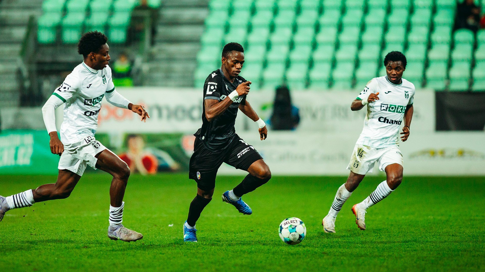

Vítejte na mém webu o fotbalu!
Ahoj všem a vítejte!
Tento web je určen pro všechny, kteří mají rádi fotbal nebo se o něm chtějí dozvědět více.
Fotbal je nejpopulárnější sport na světě a každý den ho sledují a hrají miliony lidí.
Na tomto webu najdete různé informace o fotbalu – například tabulky týmů, zajímavosti o hráčích a také
možnost registrace.
Můžete se podívat na důležité informace o tomto sportu a zjistit, proč je fotbal
tak
oblíbený.
Fotbal není jen hra.
Je to také týmová spolupráce, radost z vítězství a velké emoce, které spojují
fanoušky po celém světě.
Doufám, že se vám můj web bude líbit a že zde najdete spoustu zajímavých informací o fotbalu.
